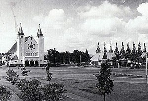
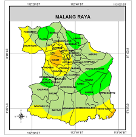
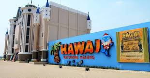

Sejarah

Kota Malang adalah salah satu Kota Pendidikan terpenting di Indonesia dengan lebih dari 60 perguruan tinggi dan ratusan ribu mahasiswa yang datang dari berbagai penjuru Nusantara.
Sebagai wilayah yang berada pada episentrum Malang Raya, Kota Malang juga menjadi pusat perdagangan,
jasa dan destinasi wisata yang sangat strategis di Jawa Timur, serta menawarkan aksesibilitas dan akomodasi yang sangat baik.
Dengan potensi sumber daya manusia yang luar biasa, Kota Malang saat ini tumbuh sebagai Kota Kreatif yang dinamis. Sebuah kota dimana keberagaman dirawat dengan budaya dan toleransi.
Kota ini adalah tempat untuk setiap insan menggapai potensi terbaiknya. Rumah dimana cerita menjadi sejarah panjang perjalanan Kota Malang.
Geografis

Topografi Kota Malang mirip dengan fisik geografi dataran tinggi di
Kabupaten Malang. Kota Malang dilalui oleh sebuah sungai besar, yaitu
Sungai Brantas yang merupakan sungai terpanjang kedua di Pulau Jawa. Kota
Malang terletak di ketinggian 440—667 meter di atas permukaan air laut.
Puncak tertinggi Kota Malang terletak di CitraGarden City Malang yang
merupakan sebuah kota mandiri kembangan Ciputra Group,[4] sedangkan
wilayah terendah di Kota Malang berada di kawasan Dieng yang dahulu sering
dilanda banjir.[5]
Wisata
Malang memang sudah terkenal memiliki banyak destinasi wisata yang menarik
sejak dulu. Berbagai wisata alam, sejarah, kuliner, hingga taman bermain
yang seru bisa kamu temukan di Malang. Tetapi jika kamu sudah sering
berkunjung ke Malang dan bosan berwisata ke tempat itu-itu aja, 10 tempat
wisata Malang terbaru dan hits 2024 di bawah ini mungkin bisa menjadi
pilihan. Baca artikel detikjatim, "10 Tempat Wisata Malang Terbaru dan
Hawai Waterpark

Hawai Waterpark Malang merupakan salah satu wisata air terbesar yang
terletak di pusat Kota Malang. Di sini, pengunjung dapat menikmati
berbagai wahana air termasuk seluncuran air yang menantang adrenalin.
Selain itu, terdapat pantai buatan dengan ombak buatan yang memungkinkan
pengunjung merasakan sensasi berselancar. Hawai Waterpark Malang
mengadopsi konsep sebagai The Wildest Waterpark in Indonesia
- Harga Tiket: Rp 110.000 (weekend dan hari libur), Rp 85 ribu (weekday)
- Jam buka: 09.00-17.00 WIB
- Lokasi: Jalan Graha Kencana Utara V, Karanglo, Banjararum
Kecamatan Singosari, Kabupaten Malang,